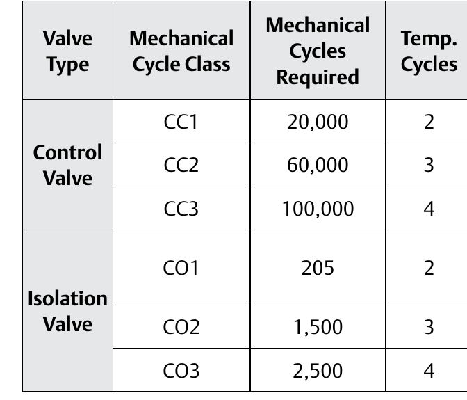

ISO 15848-1 Qualification: Three Measures Together

- 1Valve type — Control Valve or Isolation Valve; sets which class ladder applies.
- 2Mechanical cycle class — CC1/CC2/CC3 for a control valve, CO1/CO2/CO3 for an isolation valve.
- 3Mechanical cycles required — 20,000/60,000/100,000 for a control valve; a far lower 205/1,500/2,500 for an isolation valve, which doesn't stroke as often in service.
- 4Temp. cycles — the thermal-cycle count run alongside the mechanical cycling, rising with class the same way (2/3/4).
After Control Valve Handbook, 6th ed., Fig. 3.26 — cropped from the shared Fig. 3.25/3.26 extraction to isolate the qualification-requirements table alone. Component Index: cvh-cmp-iso15848-1-qualification-requirements.